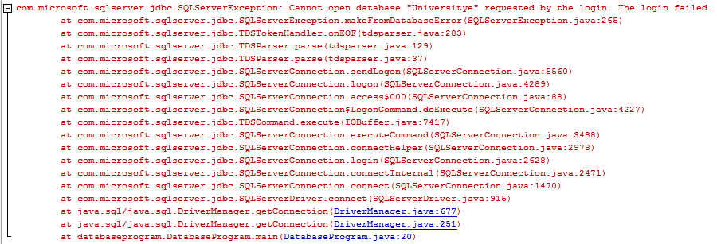
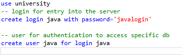

Tips Mengatasi Error Java: JDBC - SQL Server
Salah satu error yang mungkin ditemui saat mencoba menggunakan jdbc untuk menghubungkan antara sebuah aplikasi java dengan sebuah database adalah "Cannot open database. Login failed."
Error seperti ini dapat disebabkan karena beberapa hal, diantaranya yaitu:
- Kesalahan nama database. Periksa kembali pada bagian nama database dalam kode apakah sudah benar atau tidak.
- Kesalahan Username/password Periksa kembali apakah username dan password yang digunakan sudah tepat. Apabila sudah tepat maka periksa melalui SQL Server Management Studio (SSMS) bahwa login dan user tersebut telah dibuat untuk database yang ingin diakses tersebut. Login dan user pada SQL server memiliki fungsi yang berbeda, login digunakan untuk authorisasi sql server sedangkan user digunakan untuk dapat mengakses database tertentu. Sebuah login perlu dibuatkan user di database yang ingin diakses.
Menambahkan Login dan User
Apabila menemui masalah pada poin kedua tersebut. Maka langkah untuk menambahkan login dan user pada SQL server dapat dilakukan dengan mudah dengan membuat query create login dan create user seperti pada gambar di bawah ini:  "java" pada query create login dan create user dapat diganti dengan nama login yang diinginkan. Nama login dan user dapat berbeda dan tidak harus sama.Lebih lengkapnya dapat dilihat pada dokumentasi ini dan ini